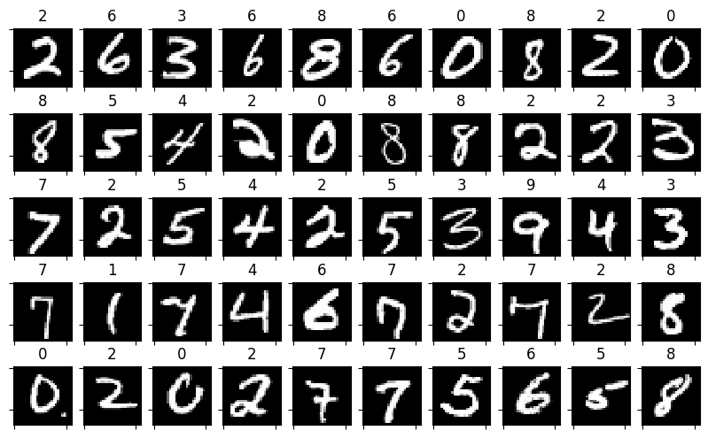
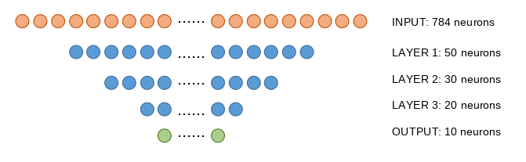
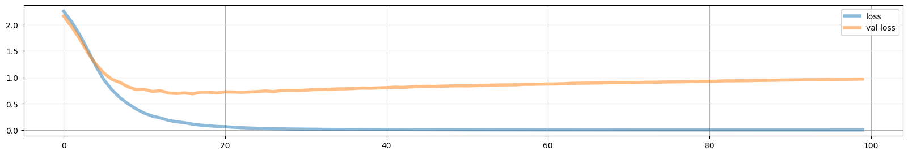
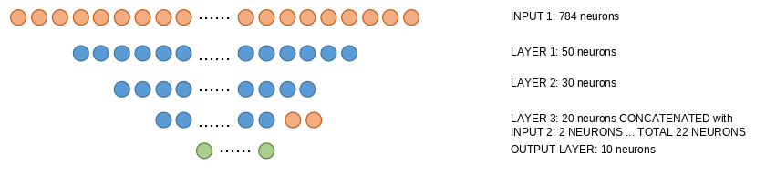
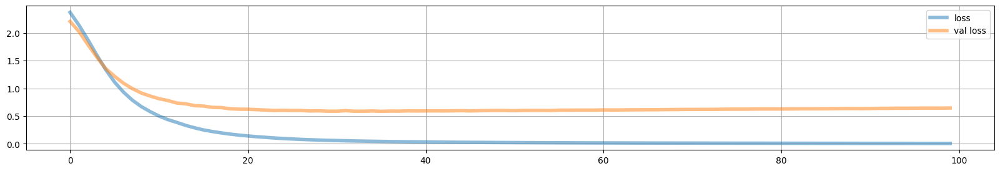

2.6 - Multimodal architectures#
!wget -nc --no-cache -O init.py -q https://raw.githubusercontent.com/rramosp/2021.deeplearning/main/content/init.py
import init; init.init(force_download=False);
/content/init.py:2: SyntaxWarning: invalid escape sequence '\S'
course_id = '\S*deeplearning\S*'
replicating local resources
import numpy as np
import matplotlib.pyplot as plt
import pandas as pd
from IPython.display import Image
%matplotlib inline
import tensorflow as tf
tf.__version__
'2.19.0'
mnist = pd.read_csv("local/data/mnist1.5k.csv.gz", compression="gzip", header=None).values
X=mnist[:,1:785]/255.
y=mnist[:,0]
print("dimension de las imagenes y las clases", X.shape, y.shape)
dimension de las imagenes y las clases (1500, 784) (1500,)
perm = np.random.permutation(list(range(X.shape[0])))[0:50]
random_imgs = X[perm]
random_labels = y[perm]
fig = plt.figure(figsize=(10,6))
for i in range(random_imgs.shape[0]):
ax=fig.add_subplot(5,10,i+1)
plt.imshow(random_imgs[i].reshape(28,28), interpolation="nearest", cmap = plt.cm.Greys_r)
ax.set_title(int(random_labels[i]))
ax.set_xticklabels([])
ax.set_yticklabels([])

A regular neural network for classification#
Image(filename='local/imgs/ann1.png')

Number of connections:
INPUT to LAYER 1: 784*50 + 50 (bias) = 39250
LAYER 1 to LAYER 2: 50*30 + 30 (bias) = 1530
LAYER 2 to LAYER 3: 30*20 + 20 (bias) = 620
LAYER 3 to OUTPUT: 20*10 + 10 (bias) = 210
TOTAL 41610
observe we convert y to a one_hot encoding
yoh = np.eye(10)[y]
i = np.random.randint(len(y))
y[i], yoh[i]
(np.int64(8), array([0., 0., 0., 0., 0., 0., 0., 0., 1., 0.]))
from sklearn.model_selection import train_test_split
X_train, X_test, y_train, y_test = train_test_split(X, y, test_size=.8)
X_train, X_test, y_train, y_test = X[:300], X[300:], y[:300], y[300:]
y_train_oh = np.eye(10)[y_train]
y_test_oh = np.eye(10)[y_test]
print(X_train.shape, y_train_oh.shape)
(300, 784) (300, 10)
create the model#
from tensorflow.keras import Sequential, Model
from tensorflow.keras.layers import Dense, Dropout, Flatten, concatenate, Input
from tensorflow.keras.backend import clear_session
def get_model_A(input_dim, s1, s2, s3, s3_activation="relu"):
print(input_dim*s1 + s1*s2 + s2*s3 + s3*10 + s1+s2+s3+10)
clear_session()
model = Sequential()
model.add(Dense(s1, activation='relu', input_dim=input_dim))
model.add(Dense(s2, activation='relu'))
model.add(Dense(s3, activation=s3_activation))
model.add(Dense(10, activation='softmax'))
model.compile(optimizer='adam', loss='categorical_crossentropy')
return model
model = get_model_A(input_dim=X.shape[1], s1=50, s2=30, s3=20)
model.summary()
41610
Model: "sequential"
┏━━━━━━━━━━━━━━━━━━━━━━━━━━━━━━━━━┳━━━━━━━━━━━━━━━━━━━━━━━━┳━━━━━━━━━━━━━━━┓ ┃ Layer (type) ┃ Output Shape ┃ Param # ┃ ┡━━━━━━━━━━━━━━━━━━━━━━━━━━━━━━━━━╇━━━━━━━━━━━━━━━━━━━━━━━━╇━━━━━━━━━━━━━━━┩ │ dense (Dense) │ (None, 50) │ 39,250 │ ├─────────────────────────────────┼────────────────────────┼───────────────┤ │ dense_1 (Dense) │ (None, 30) │ 1,530 │ ├─────────────────────────────────┼────────────────────────┼───────────────┤ │ dense_2 (Dense) │ (None, 20) │ 620 │ ├─────────────────────────────────┼────────────────────────┼───────────────┤ │ dense_3 (Dense) │ (None, 10) │ 210 │ └─────────────────────────────────┴────────────────────────┴───────────────┘
Total params: 41,610 (162.54 KB)
Trainable params: 41,610 (162.54 KB)
Non-trainable params: 0 (0.00 B)
fit and display losses#
model.fit(X_train, y_train_oh, epochs=100, batch_size=32, validation_data=(X_test, y_test_oh))
Epoch 1/100
10/10 ━━━━━━━━━━━━━━━━━━━━ 2s 81ms/step - loss: 2.2954 - val_loss: 2.1621
Epoch 2/100
10/10 ━━━━━━━━━━━━━━━━━━━━ 1s 26ms/step - loss: 2.0720 - val_loss: 1.9600
Epoch 3/100
10/10 ━━━━━━━━━━━━━━━━━━━━ 0s 46ms/step - loss: 1.8375 - val_loss: 1.7254
Epoch 4/100
10/10 ━━━━━━━━━━━━━━━━━━━━ 1s 50ms/step - loss: 1.5696 - val_loss: 1.4649
Epoch 5/100
10/10 ━━━━━━━━━━━━━━━━━━━━ 0s 20ms/step - loss: 1.2652 - val_loss: 1.2484
Epoch 6/100
10/10 ━━━━━━━━━━━━━━━━━━━━ 0s 16ms/step - loss: 0.9803 - val_loss: 1.0799
Epoch 7/100
10/10 ━━━━━━━━━━━━━━━━━━━━ 0s 24ms/step - loss: 0.8234 - val_loss: 0.9596
Epoch 8/100
10/10 ━━━━━━━━━━━━━━━━━━━━ 0s 16ms/step - loss: 0.6021 - val_loss: 0.9018
Epoch 9/100
10/10 ━━━━━━━━━━━━━━━━━━━━ 0s 23ms/step - loss: 0.4973 - val_loss: 0.8189
Epoch 10/100
10/10 ━━━━━━━━━━━━━━━━━━━━ 0s 23ms/step - loss: 0.3958 - val_loss: 0.7671
Epoch 11/100
10/10 ━━━━━━━━━━━━━━━━━━━━ 0s 16ms/step - loss: 0.3382 - val_loss: 0.7722
Epoch 12/100
10/10 ━━━━━━━━━━━━━━━━━━━━ 0s 24ms/step - loss: 0.2645 - val_loss: 0.7311
Epoch 13/100
10/10 ━━━━━━━━━━━━━━━━━━━━ 0s 26ms/step - loss: 0.2472 - val_loss: 0.7472
Epoch 14/100
10/10 ━━━━━━━━━━━━━━━━━━━━ 0s 23ms/step - loss: 0.1806 - val_loss: 0.7027
Epoch 15/100
10/10 ━━━━━━━━━━━━━━━━━━━━ 0s 17ms/step - loss: 0.1554 - val_loss: 0.6946
Epoch 16/100
10/10 ━━━━━━━━━━━━━━━━━━━━ 0s 24ms/step - loss: 0.1408 - val_loss: 0.7046
Epoch 17/100
10/10 ━━━━━━━━━━━━━━━━━━━━ 0s 25ms/step - loss: 0.1133 - val_loss: 0.6883
Epoch 18/100
10/10 ━━━━━━━━━━━━━━━━━━━━ 0s 17ms/step - loss: 0.0872 - val_loss: 0.7181
Epoch 19/100
10/10 ━━━━━━━━━━━━━━━━━━━━ 0s 23ms/step - loss: 0.0796 - val_loss: 0.7175
Epoch 20/100
10/10 ━━━━━━━━━━━━━━━━━━━━ 0s 17ms/step - loss: 0.0648 - val_loss: 0.7024
Epoch 21/100
10/10 ━━━━━━━━━━━━━━━━━━━━ 0s 19ms/step - loss: 0.0646 - val_loss: 0.7255
Epoch 22/100
10/10 ━━━━━━━━━━━━━━━━━━━━ 0s 19ms/step - loss: 0.0514 - val_loss: 0.7222
Epoch 23/100
10/10 ━━━━━━━━━━━━━━━━━━━━ 0s 25ms/step - loss: 0.0477 - val_loss: 0.7162
Epoch 24/100
10/10 ━━━━━━━━━━━━━━━━━━━━ 0s 25ms/step - loss: 0.0421 - val_loss: 0.7229
Epoch 25/100
10/10 ━━━━━━━━━━━━━━━━━━━━ 0s 25ms/step - loss: 0.0355 - val_loss: 0.7289
Epoch 26/100
10/10 ━━━━━━━━━━━━━━━━━━━━ 0s 23ms/step - loss: 0.0293 - val_loss: 0.7422
Epoch 27/100
10/10 ━━━━━━━━━━━━━━━━━━━━ 0s 25ms/step - loss: 0.0267 - val_loss: 0.7282
Epoch 28/100
10/10 ━━━━━━━━━━━━━━━━━━━━ 0s 21ms/step - loss: 0.0240 - val_loss: 0.7517
Epoch 29/100
10/10 ━━━━━━━━━━━━━━━━━━━━ 0s 26ms/step - loss: 0.0199 - val_loss: 0.7545
Epoch 30/100
10/10 ━━━━━━━━━━━━━━━━━━━━ 0s 20ms/step - loss: 0.0184 - val_loss: 0.7512
Epoch 31/100
10/10 ━━━━━━━━━━━━━━━━━━━━ 0s 25ms/step - loss: 0.0166 - val_loss: 0.7565
Epoch 32/100
10/10 ━━━━━━━━━━━━━━━━━━━━ 0s 25ms/step - loss: 0.0147 - val_loss: 0.7673
Epoch 33/100
10/10 ━━━━━━━━━━━━━━━━━━━━ 0s 24ms/step - loss: 0.0156 - val_loss: 0.7686
Epoch 34/100
10/10 ━━━━━━━━━━━━━━━━━━━━ 0s 25ms/step - loss: 0.0129 - val_loss: 0.7739
Epoch 35/100
10/10 ━━━━━━━━━━━━━━━━━━━━ 0s 24ms/step - loss: 0.0113 - val_loss: 0.7820
Epoch 36/100
10/10 ━━━━━━━━━━━━━━━━━━━━ 0s 25ms/step - loss: 0.0110 - val_loss: 0.7828
Epoch 37/100
10/10 ━━━━━━━━━━━━━━━━━━━━ 0s 16ms/step - loss: 0.0107 - val_loss: 0.7888
Epoch 38/100
10/10 ━━━━━━━━━━━━━━━━━━━━ 0s 19ms/step - loss: 0.0090 - val_loss: 0.7977
Epoch 39/100
10/10 ━━━━━━━━━━━━━━━━━━━━ 0s 25ms/step - loss: 0.0094 - val_loss: 0.7942
Epoch 40/100
10/10 ━━━━━━━━━━━━━━━━━━━━ 0s 22ms/step - loss: 0.0082 - val_loss: 0.8005
Epoch 41/100
10/10 ━━━━━━━━━━━━━━━━━━━━ 0s 44ms/step - loss: 0.0070 - val_loss: 0.8048
Epoch 42/100
10/10 ━━━━━━━━━━━━━━━━━━━━ 0s 27ms/step - loss: 0.0078 - val_loss: 0.8141
Epoch 43/100
10/10 ━━━━━━━━━━━━━━━━━━━━ 1s 45ms/step - loss: 0.0069 - val_loss: 0.8103
Epoch 44/100
10/10 ━━━━━━━━━━━━━━━━━━━━ 0s 28ms/step - loss: 0.0061 - val_loss: 0.8182
Epoch 45/100
10/10 ━━━━━━━━━━━━━━━━━━━━ 1s 24ms/step - loss: 0.0064 - val_loss: 0.8272
Epoch 46/100
10/10 ━━━━━━━━━━━━━━━━━━━━ 0s 23ms/step - loss: 0.0061 - val_loss: 0.8299
Epoch 47/100
10/10 ━━━━━━━━━━━━━━━━━━━━ 0s 23ms/step - loss: 0.0051 - val_loss: 0.8275
Epoch 48/100
10/10 ━━━━━━━━━━━━━━━━━━━━ 0s 23ms/step - loss: 0.0053 - val_loss: 0.8342
Epoch 49/100
10/10 ━━━━━━━━━━━━━━━━━━━━ 0s 23ms/step - loss: 0.0048 - val_loss: 0.8367
Epoch 50/100
10/10 ━━━━━━━━━━━━━━━━━━━━ 0s 23ms/step - loss: 0.0048 - val_loss: 0.8398
Epoch 51/100
10/10 ━━━━━━━━━━━━━━━━━━━━ 0s 23ms/step - loss: 0.0045 - val_loss: 0.8376
Epoch 52/100
10/10 ━━━━━━━━━━━━━━━━━━━━ 0s 24ms/step - loss: 0.0043 - val_loss: 0.8428
Epoch 53/100
10/10 ━━━━━━━━━━━━━━━━━━━━ 0s 23ms/step - loss: 0.0044 - val_loss: 0.8490
Epoch 54/100
10/10 ━━━━━━━━━━━━━━━━━━━━ 0s 20ms/step - loss: 0.0038 - val_loss: 0.8523
Epoch 55/100
10/10 ━━━━━━━━━━━━━━━━━━━━ 0s 24ms/step - loss: 0.0034 - val_loss: 0.8562
Epoch 56/100
10/10 ━━━━━━━━━━━━━━━━━━━━ 0s 17ms/step - loss: 0.0041 - val_loss: 0.8571
Epoch 57/100
10/10 ━━━━━━━━━━━━━━━━━━━━ 0s 23ms/step - loss: 0.0035 - val_loss: 0.8579
Epoch 58/100
10/10 ━━━━━━━━━━━━━━━━━━━━ 0s 20ms/step - loss: 0.0038 - val_loss: 0.8685
Epoch 59/100
10/10 ━━━━━━━━━━━━━━━━━━━━ 0s 25ms/step - loss: 0.0030 - val_loss: 0.8680
Epoch 60/100
10/10 ━━━━━━━━━━━━━━━━━━━━ 0s 26ms/step - loss: 0.0033 - val_loss: 0.8712
Epoch 61/100
10/10 ━━━━━━━━━━━━━━━━━━━━ 0s 24ms/step - loss: 0.0033 - val_loss: 0.8733
Epoch 62/100
10/10 ━━━━━━━━━━━━━━━━━━━━ 0s 18ms/step - loss: 0.0027 - val_loss: 0.8746
Epoch 63/100
10/10 ━━━━━━━━━━━━━━━━━━━━ 0s 16ms/step - loss: 0.0028 - val_loss: 0.8796
Epoch 64/100
10/10 ━━━━━━━━━━━━━━━━━━━━ 0s 23ms/step - loss: 0.0025 - val_loss: 0.8873
Epoch 65/100
10/10 ━━━━━━━━━━━━━━━━━━━━ 0s 23ms/step - loss: 0.0028 - val_loss: 0.8891
Epoch 66/100
10/10 ━━━━━━━━━━━━━━━━━━━━ 0s 17ms/step - loss: 0.0024 - val_loss: 0.8905
Epoch 67/100
10/10 ━━━━━━━━━━━━━━━━━━━━ 0s 24ms/step - loss: 0.0022 - val_loss: 0.8918
Epoch 68/100
10/10 ━━━━━━━━━━━━━━━━━━━━ 0s 23ms/step - loss: 0.0026 - val_loss: 0.8961
Epoch 69/100
10/10 ━━━━━━━━━━━━━━━━━━━━ 0s 17ms/step - loss: 0.0024 - val_loss: 0.8974
Epoch 70/100
10/10 ━━━━━━━━━━━━━━━━━━━━ 0s 20ms/step - loss: 0.0018 - val_loss: 0.8987
Epoch 71/100
10/10 ━━━━━━━━━━━━━━━━━━━━ 0s 25ms/step - loss: 0.0019 - val_loss: 0.8992
Epoch 72/100
10/10 ━━━━━━━━━━━━━━━━━━━━ 0s 25ms/step - loss: 0.0020 - val_loss: 0.9018
Epoch 73/100
10/10 ━━━━━━━━━━━━━━━━━━━━ 0s 20ms/step - loss: 0.0022 - val_loss: 0.9058
Epoch 74/100
10/10 ━━━━━━━━━━━━━━━━━━━━ 0s 21ms/step - loss: 0.0018 - val_loss: 0.9068
Epoch 75/100
10/10 ━━━━━━━━━━━━━━━━━━━━ 0s 25ms/step - loss: 0.0018 - val_loss: 0.9102
Epoch 76/100
10/10 ━━━━━━━━━━━━━━━━━━━━ 0s 18ms/step - loss: 0.0021 - val_loss: 0.9140
Epoch 77/100
10/10 ━━━━━━━━━━━━━━━━━━━━ 0s 18ms/step - loss: 0.0018 - val_loss: 0.9150
Epoch 78/100
10/10 ━━━━━━━━━━━━━━━━━━━━ 0s 23ms/step - loss: 0.0017 - val_loss: 0.9170
Epoch 79/100
10/10 ━━━━━━━━━━━━━━━━━━━━ 0s 19ms/step - loss: 0.0018 - val_loss: 0.9216
Epoch 80/100
10/10 ━━━━━━━━━━━━━━━━━━━━ 0s 23ms/step - loss: 0.0016 - val_loss: 0.9248
Epoch 81/100
10/10 ━━━━━━━━━━━━━━━━━━━━ 0s 17ms/step - loss: 0.0016 - val_loss: 0.9245
Epoch 82/100
10/10 ━━━━━━━━━━━━━━━━━━━━ 0s 23ms/step - loss: 0.0014 - val_loss: 0.9281
Epoch 83/100
10/10 ━━━━━━━━━━━━━━━━━━━━ 0s 31ms/step - loss: 0.0014 - val_loss: 0.9342
Epoch 84/100
10/10 ━━━━━━━━━━━━━━━━━━━━ 1s 28ms/step - loss: 0.0015 - val_loss: 0.9338
Epoch 85/100
10/10 ━━━━━━━━━━━━━━━━━━━━ 0s 45ms/step - loss: 0.0014 - val_loss: 0.9347
Epoch 86/100
10/10 ━━━━━━━━━━━━━━━━━━━━ 0s 26ms/step - loss: 0.0015 - val_loss: 0.9376
Epoch 87/100
10/10 ━━━━━━━━━━━━━━━━━━━━ 0s 26ms/step - loss: 0.0015 - val_loss: 0.9412
Epoch 88/100
10/10 ━━━━━━━━━━━━━━━━━━━━ 0s 19ms/step - loss: 0.0013 - val_loss: 0.9423
Epoch 89/100
10/10 ━━━━━━━━━━━━━━━━━━━━ 0s 18ms/step - loss: 0.0013 - val_loss: 0.9443
Epoch 90/100
10/10 ━━━━━━━━━━━━━━━━━━━━ 0s 24ms/step - loss: 0.0012 - val_loss: 0.9480
Epoch 91/100
10/10 ━━━━━━━━━━━━━━━━━━━━ 0s 25ms/step - loss: 0.0012 - val_loss: 0.9490
Epoch 92/100
10/10 ━━━━━━━━━━━━━━━━━━━━ 0s 46ms/step - loss: 0.0011 - val_loss: 0.9517
Epoch 93/100
10/10 ━━━━━━━━━━━━━━━━━━━━ 0s 36ms/step - loss: 0.0011 - val_loss: 0.9548
Epoch 94/100
10/10 ━━━━━━━━━━━━━━━━━━━━ 1s 23ms/step - loss: 0.0012 - val_loss: 0.9546
Epoch 95/100
10/10 ━━━━━━━━━━━━━━━━━━━━ 0s 23ms/step - loss: 0.0012 - val_loss: 0.9561
Epoch 96/100
10/10 ━━━━━━━━━━━━━━━━━━━━ 0s 19ms/step - loss: 0.0011 - val_loss: 0.9577
Epoch 97/100
10/10 ━━━━━━━━━━━━━━━━━━━━ 0s 24ms/step - loss: 0.0011 - val_loss: 0.9601
Epoch 98/100
10/10 ━━━━━━━━━━━━━━━━━━━━ 0s 26ms/step - loss: 0.0010 - val_loss: 0.9617
Epoch 99/100
10/10 ━━━━━━━━━━━━━━━━━━━━ 0s 20ms/step - loss: 9.3972e-04 - val_loss: 0.9652
Epoch 100/100
10/10 ━━━━━━━━━━━━━━━━━━━━ 0s 23ms/step - loss: 0.0012 - val_loss: 0.9674
<keras.src.callbacks.history.History at 0x7cc6dc036960>
plt.figure(figsize=(20,3))
loss = model.history.history["loss"]
vloss = model.history.history["val_loss"]
plt.plot(loss, lw=4, alpha=.5, label="loss")
plt.plot(vloss, lw=4, alpha=.5, label="val loss")
plt.grid();
plt.legend();

measure accuracies#
why are we using argmax below?
preds_train = model.predict(X_train).argmax(axis=1)
preds_test = model.predict(X_test).argmax(axis=1)
print("accuracy train %.3f"%(np.mean(preds_train==y_train)))
print("accuracy test %.3f"%(np.mean(preds_test==y_test)))
10/10 ━━━━━━━━━━━━━━━━━━━━ 0s 10ms/step
38/38 ━━━━━━━━━━━━━━━━━━━━ 0s 2ms/step
accuracy train 1.000
accuracy test 0.796
Multimodal network#
We will simulate we have information about our data from an additional source. This can be the case when we have, for instance, medical images and associated clinical data. In this situation we have multimodal data (images and numeric).
We would like to have an arquitecture in which we can inject both image and numeric data.
In this case, we assume we have an additional information source, telling us with a size 2 vector whether each image contains an odd or even number (with vaues [1 0] or [0 1])
This new info is injected at LAYER 3 simply concatenating the neurons
Image(filename='local/imgs/ann2.png')

Number of connections:
INPUT 1 to LAYER 1: 784*50 + 50 (bias) = 39250
LAYER 1 to LAYER 2: 50*30 + 30 (bias) = 1530
LAYER 2 to LAYER 3: 30*20 + 20 (bias) = 620
LAYER 3 + INPUT 2 to OUTPUT: (20+2)*10 + 10 (bias) = 230
TOTAL 41630
observe how this new architecture is built, and how the two kinds of information are handled both when building the network or when fitting or predicting
class Concat(tf.keras.Layer):
def call(self, layers):
return tf.concat(layers,axis=1)
def get_model_B(input_dim, extra_info_dim, s1, s2, s3, s3_activation="relu"):
clear_session()
inp1 = Input(shape=(input_dim,), name="input_img")
l11 = Dense(s1, activation="relu", name="dense1")(inp1)
l12 = Dense(s2, activation="relu", name="dense2")(l11)
l13 = Dense(s3, activation=s3_activation, name="dense3")(l12)
inp2 = Input(shape=(extra_info_dim,), name="input_extra")
cc1 = Concat()([l13, inp2])
output = Dense(10, activation='softmax', name="output")(cc1)
model = Model(inputs=[inp1, inp2], outputs=output)
model.compile(optimizer='adam', loss='categorical_crossentropy')
return model
We simulate extra information, we could actually have several choices to encode this information, for instance
[ 1, 0] [ 0, 1]or[ 1,-1] [-1, 1]or[10, 0] [ 0,10]among others
Observe how k0, k1 control how the data is represented. Try:
k0=0, k1=1
k0=-0.5, k1=2
k0=0, k2=10
k0=-0.5, k1=20
to understand how this coding affects the representation
def get_X_extra(y_train, y_test, k0, k1):
X_train_extra = (np.eye(2)[y_train%2]+k0)*k1
X_test_extra = (np.eye(2)[y_test%2]+k0)*k1
return X_train_extra, X_test_extra
X_train_extra, X_test_extra = get_X_extra(y_train, y_test, k0=-.5, k1=2)
X_train_extra[:10]
array([[-1., 1.],
[ 1., -1.],
[-1., 1.],
[ 1., -1.],
[ 1., -1.],
[ 1., -1.],
[-1., 1.],
[-1., 1.],
[-1., 1.],
[-1., 1.]])
model = get_model_B(input_dim=X.shape[1], extra_info_dim=X_train_extra.shape[1], s1=50, s2=30, s3=20,
s3_activation="tanh")
model.summary()
Model: "functional"
┏━━━━━━━━━━━━━━━━━━━━━┳━━━━━━━━━━━━━━━━━━━┳━━━━━━━━━━━━┳━━━━━━━━━━━━━━━━━━━┓ ┃ Layer (type) ┃ Output Shape ┃ Param # ┃ Connected to ┃ ┡━━━━━━━━━━━━━━━━━━━━━╇━━━━━━━━━━━━━━━━━━━╇━━━━━━━━━━━━╇━━━━━━━━━━━━━━━━━━━┩ │ input_img │ (None, 784) │ 0 │ - │ │ (InputLayer) │ │ │ │ ├─────────────────────┼───────────────────┼────────────┼───────────────────┤ │ dense1 (Dense) │ (None, 50) │ 39,250 │ input_img[0][0] │ ├─────────────────────┼───────────────────┼────────────┼───────────────────┤ │ dense2 (Dense) │ (None, 30) │ 1,530 │ dense1[0][0] │ ├─────────────────────┼───────────────────┼────────────┼───────────────────┤ │ dense3 (Dense) │ (None, 20) │ 620 │ dense2[0][0] │ ├─────────────────────┼───────────────────┼────────────┼───────────────────┤ │ input_extra │ (None, 2) │ 0 │ - │ │ (InputLayer) │ │ │ │ ├─────────────────────┼───────────────────┼────────────┼───────────────────┤ │ concat (Concat) │ (None, 22) │ 0 │ dense3[0][0], │ │ │ │ │ input_extra[0][0] │ ├─────────────────────┼───────────────────┼────────────┼───────────────────┤ │ output (Dense) │ (None, 10) │ 230 │ concat[0][0] │ └─────────────────────┴───────────────────┴────────────┴───────────────────┘
Total params: 41,630 (162.62 KB)
Trainable params: 41,630 (162.62 KB)
Non-trainable params: 0 (0.00 B)
model.fit([X_train, X_train_extra], y_train_oh, epochs=100, batch_size=32,
validation_data=([X_test, X_test_extra], y_test_oh))
Epoch 1/100
10/10 ━━━━━━━━━━━━━━━━━━━━ 2s 48ms/step - loss: 2.4579 - val_loss: 2.2070
Epoch 2/100
10/10 ━━━━━━━━━━━━━━━━━━━━ 0s 17ms/step - loss: 2.1755 - val_loss: 2.0255
Epoch 3/100
10/10 ━━━━━━━━━━━━━━━━━━━━ 0s 24ms/step - loss: 1.9391 - val_loss: 1.7903
Epoch 4/100
10/10 ━━━━━━━━━━━━━━━━━━━━ 0s 18ms/step - loss: 1.6191 - val_loss: 1.5660
Epoch 5/100
10/10 ━━━━━━━━━━━━━━━━━━━━ 0s 17ms/step - loss: 1.3847 - val_loss: 1.3577
Epoch 6/100
10/10 ━━━━━━━━━━━━━━━━━━━━ 0s 24ms/step - loss: 1.1145 - val_loss: 1.2180
Epoch 7/100
10/10 ━━━━━━━━━━━━━━━━━━━━ 0s 17ms/step - loss: 0.9945 - val_loss: 1.0937
Epoch 8/100
10/10 ━━━━━━━━━━━━━━━━━━━━ 0s 24ms/step - loss: 0.7901 - val_loss: 0.9952
Epoch 9/100
10/10 ━━━━━━━━━━━━━━━━━━━━ 0s 24ms/step - loss: 0.6896 - val_loss: 0.9166
Epoch 10/100
10/10 ━━━━━━━━━━━━━━━━━━━━ 0s 26ms/step - loss: 0.6219 - val_loss: 0.8615
Epoch 11/100
10/10 ━━━━━━━━━━━━━━━━━━━━ 0s 27ms/step - loss: 0.4936 - val_loss: 0.8130
Epoch 12/100
10/10 ━━━━━━━━━━━━━━━━━━━━ 0s 27ms/step - loss: 0.4216 - val_loss: 0.7800
Epoch 13/100
10/10 ━━━━━━━━━━━━━━━━━━━━ 0s 25ms/step - loss: 0.3793 - val_loss: 0.7349
Epoch 14/100
10/10 ━━━━━━━━━━━━━━━━━━━━ 0s 24ms/step - loss: 0.3376 - val_loss: 0.7212
Epoch 15/100
10/10 ━━━━━━━━━━━━━━━━━━━━ 0s 23ms/step - loss: 0.2824 - val_loss: 0.6875
Epoch 16/100
10/10 ━━━━━━━━━━━━━━━━━━━━ 0s 18ms/step - loss: 0.2395 - val_loss: 0.6802
Epoch 17/100
10/10 ━━━━━━━━━━━━━━━━━━━━ 0s 24ms/step - loss: 0.2358 - val_loss: 0.6571
Epoch 18/100
10/10 ━━━━━━━━━━━━━━━━━━━━ 0s 26ms/step - loss: 0.1861 - val_loss: 0.6522
Epoch 19/100
10/10 ━━━━━━━━━━━━━━━━━━━━ 0s 19ms/step - loss: 0.1919 - val_loss: 0.6313
Epoch 20/100
10/10 ━━━━━━━━━━━━━━━━━━━━ 0s 19ms/step - loss: 0.1429 - val_loss: 0.6238
Epoch 21/100
10/10 ━━━━━━━━━━━━━━━━━━━━ 0s 26ms/step - loss: 0.1468 - val_loss: 0.6222
Epoch 22/100
10/10 ━━━━━━━━━━━━━━━━━━━━ 0s 25ms/step - loss: 0.1234 - val_loss: 0.6152
Epoch 23/100
10/10 ━━━━━━━━━━━━━━━━━━━━ 0s 21ms/step - loss: 0.1153 - val_loss: 0.6076
Epoch 24/100
10/10 ━━━━━━━━━━━━━━━━━━━━ 0s 20ms/step - loss: 0.1054 - val_loss: 0.6011
Epoch 25/100
10/10 ━━━━━━━━━━━━━━━━━━━━ 0s 24ms/step - loss: 0.0952 - val_loss: 0.6042
Epoch 26/100
10/10 ━━━━━━━━━━━━━━━━━━━━ 0s 22ms/step - loss: 0.0940 - val_loss: 0.5993
Epoch 27/100
10/10 ━━━━━━━━━━━━━━━━━━━━ 1s 46ms/step - loss: 0.0800 - val_loss: 0.5999
Epoch 28/100
10/10 ━━━━━━━━━━━━━━━━━━━━ 0s 48ms/step - loss: 0.0746 - val_loss: 0.5919
Epoch 29/100
10/10 ━━━━━━━━━━━━━━━━━━━━ 1s 51ms/step - loss: 0.0674 - val_loss: 0.5949
Epoch 30/100
10/10 ━━━━━━━━━━━━━━━━━━━━ 1s 50ms/step - loss: 0.0627 - val_loss: 0.5867
Epoch 31/100
10/10 ━━━━━━━━━━━━━━━━━━━━ 0s 28ms/step - loss: 0.0555 - val_loss: 0.5872
Epoch 32/100
10/10 ━━━━━━━━━━━━━━━━━━━━ 0s 24ms/step - loss: 0.0520 - val_loss: 0.5967
Epoch 33/100
10/10 ━━━━━━━━━━━━━━━━━━━━ 0s 23ms/step - loss: 0.0482 - val_loss: 0.5864
Epoch 34/100
10/10 ━━━━━━━━━━━━━━━━━━━━ 0s 18ms/step - loss: 0.0475 - val_loss: 0.5869
Epoch 35/100
10/10 ━━━━━━━━━━━━━━━━━━━━ 0s 20ms/step - loss: 0.0464 - val_loss: 0.5911
Epoch 36/100
10/10 ━━━━━━━━━━━━━━━━━━━━ 0s 25ms/step - loss: 0.0415 - val_loss: 0.5850
Epoch 37/100
10/10 ━━━━━━━━━━━━━━━━━━━━ 0s 28ms/step - loss: 0.0400 - val_loss: 0.5897
Epoch 38/100
10/10 ━━━━━━━━━━━━━━━━━━━━ 0s 22ms/step - loss: 0.0361 - val_loss: 0.5882
Epoch 39/100
10/10 ━━━━━━━━━━━━━━━━━━━━ 0s 25ms/step - loss: 0.0369 - val_loss: 0.5939
Epoch 40/100
10/10 ━━━━━━━━━━━━━━━━━━━━ 0s 24ms/step - loss: 0.0345 - val_loss: 0.5913
Epoch 41/100
10/10 ━━━━━━━━━━━━━━━━━━━━ 0s 21ms/step - loss: 0.0321 - val_loss: 0.5930
Epoch 42/100
10/10 ━━━━━━━━━━━━━━━━━━━━ 0s 19ms/step - loss: 0.0306 - val_loss: 0.5931
Epoch 43/100
10/10 ━━━━━━━━━━━━━━━━━━━━ 0s 21ms/step - loss: 0.0295 - val_loss: 0.5925
Epoch 44/100
10/10 ━━━━━━━━━━━━━━━━━━━━ 0s 25ms/step - loss: 0.0291 - val_loss: 0.5944
Epoch 45/100
10/10 ━━━━━━━━━━━━━━━━━━━━ 0s 24ms/step - loss: 0.0265 - val_loss: 0.5967
Epoch 46/100
10/10 ━━━━━━━━━━━━━━━━━━━━ 0s 24ms/step - loss: 0.0255 - val_loss: 0.5929
Epoch 47/100
10/10 ━━━━━━━━━━━━━━━━━━━━ 0s 23ms/step - loss: 0.0242 - val_loss: 0.5961
Epoch 48/100
10/10 ━━━━━━━━━━━━━━━━━━━━ 0s 21ms/step - loss: 0.0235 - val_loss: 0.5987
Epoch 49/100
10/10 ━━━━━━━━━━━━━━━━━━━━ 0s 18ms/step - loss: 0.0226 - val_loss: 0.6004
Epoch 50/100
10/10 ━━━━━━━━━━━━━━━━━━━━ 0s 24ms/step - loss: 0.0216 - val_loss: 0.5988
Epoch 51/100
10/10 ━━━━━━━━━━━━━━━━━━━━ 0s 24ms/step - loss: 0.0207 - val_loss: 0.5965
Epoch 52/100
10/10 ━━━━━━━━━━━━━━━━━━━━ 0s 26ms/step - loss: 0.0207 - val_loss: 0.6002
Epoch 53/100
10/10 ━━━━━━━━━━━━━━━━━━━━ 0s 24ms/step - loss: 0.0191 - val_loss: 0.6016
Epoch 54/100
10/10 ━━━━━━━━━━━━━━━━━━━━ 0s 25ms/step - loss: 0.0185 - val_loss: 0.6015
Epoch 55/100
10/10 ━━━━━━━━━━━━━━━━━━━━ 0s 21ms/step - loss: 0.0176 - val_loss: 0.6000
Epoch 56/100
10/10 ━━━━━━━━━━━━━━━━━━━━ 0s 26ms/step - loss: 0.0183 - val_loss: 0.6059
Epoch 57/100
10/10 ━━━━━━━━━━━━━━━━━━━━ 0s 21ms/step - loss: 0.0172 - val_loss: 0.6054
Epoch 58/100
10/10 ━━━━━━━━━━━━━━━━━━━━ 0s 23ms/step - loss: 0.0164 - val_loss: 0.6074
Epoch 59/100
10/10 ━━━━━━━━━━━━━━━━━━━━ 0s 24ms/step - loss: 0.0160 - val_loss: 0.6071
Epoch 60/100
10/10 ━━━━━━━━━━━━━━━━━━━━ 0s 29ms/step - loss: 0.0149 - val_loss: 0.6076
Epoch 61/100
10/10 ━━━━━━━━━━━━━━━━━━━━ 0s 20ms/step - loss: 0.0160 - val_loss: 0.6109
Epoch 62/100
10/10 ━━━━━━━━━━━━━━━━━━━━ 0s 26ms/step - loss: 0.0143 - val_loss: 0.6090
Epoch 63/100
10/10 ━━━━━━━━━━━━━━━━━━━━ 0s 26ms/step - loss: 0.0142 - val_loss: 0.6100
Epoch 64/100
10/10 ━━━━━━━━━━━━━━━━━━━━ 0s 25ms/step - loss: 0.0141 - val_loss: 0.6123
Epoch 65/100
10/10 ━━━━━━━━━━━━━━━━━━━━ 0s 25ms/step - loss: 0.0129 - val_loss: 0.6127
Epoch 66/100
10/10 ━━━━━━━━━━━━━━━━━━━━ 0s 27ms/step - loss: 0.0129 - val_loss: 0.6139
Epoch 67/100
10/10 ━━━━━━━━━━━━━━━━━━━━ 0s 26ms/step - loss: 0.0129 - val_loss: 0.6139
Epoch 68/100
10/10 ━━━━━━━━━━━━━━━━━━━━ 1s 49ms/step - loss: 0.0119 - val_loss: 0.6164
Epoch 69/100
10/10 ━━━━━━━━━━━━━━━━━━━━ 1s 46ms/step - loss: 0.0119 - val_loss: 0.6172
Epoch 70/100
10/10 ━━━━━━━━━━━━━━━━━━━━ 0s 28ms/step - loss: 0.0116 - val_loss: 0.6189
Epoch 71/100
10/10 ━━━━━━━━━━━━━━━━━━━━ 0s 27ms/step - loss: 0.0113 - val_loss: 0.6190
Epoch 72/100
10/10 ━━━━━━━━━━━━━━━━━━━━ 0s 45ms/step - loss: 0.0118 - val_loss: 0.6200
Epoch 73/100
10/10 ━━━━━━━━━━━━━━━━━━━━ 0s 27ms/step - loss: 0.0104 - val_loss: 0.6203
Epoch 74/100
10/10 ━━━━━━━━━━━━━━━━━━━━ 0s 20ms/step - loss: 0.0104 - val_loss: 0.6219
Epoch 75/100
10/10 ━━━━━━━━━━━━━━━━━━━━ 0s 17ms/step - loss: 0.0103 - val_loss: 0.6237
Epoch 76/100
10/10 ━━━━━━━━━━━━━━━━━━━━ 0s 19ms/step - loss: 0.0099 - val_loss: 0.6241
Epoch 77/100
10/10 ━━━━━━━━━━━━━━━━━━━━ 0s 18ms/step - loss: 0.0098 - val_loss: 0.6240
Epoch 78/100
10/10 ━━━━━━━━━━━━━━━━━━━━ 0s 18ms/step - loss: 0.0093 - val_loss: 0.6264
Epoch 79/100
10/10 ━━━━━━━━━━━━━━━━━━━━ 0s 18ms/step - loss: 0.0093 - val_loss: 0.6274
Epoch 80/100
10/10 ━━━━━━━━━━━━━━━━━━━━ 0s 25ms/step - loss: 0.0092 - val_loss: 0.6277
Epoch 81/100
10/10 ━━━━━━━━━━━━━━━━━━━━ 0s 20ms/step - loss: 0.0088 - val_loss: 0.6270
Epoch 82/100
10/10 ━━━━━━━━━━━━━━━━━━━━ 0s 25ms/step - loss: 0.0084 - val_loss: 0.6284
Epoch 83/100
10/10 ━━━━━━━━━━━━━━━━━━━━ 0s 17ms/step - loss: 0.0085 - val_loss: 0.6306
Epoch 84/100
10/10 ━━━━━━━━━━━━━━━━━━━━ 0s 23ms/step - loss: 0.0084 - val_loss: 0.6306
Epoch 85/100
10/10 ━━━━━━━━━━━━━━━━━━━━ 0s 24ms/step - loss: 0.0083 - val_loss: 0.6308
Epoch 86/100
10/10 ━━━━━━━━━━━━━━━━━━━━ 0s 19ms/step - loss: 0.0082 - val_loss: 0.6314
Epoch 87/100
10/10 ━━━━━━━━━━━━━━━━━━━━ 0s 24ms/step - loss: 0.0078 - val_loss: 0.6334
Epoch 88/100
10/10 ━━━━━━━━━━━━━━━━━━━━ 0s 18ms/step - loss: 0.0075 - val_loss: 0.6353
Epoch 89/100
10/10 ━━━━━━━━━━━━━━━━━━━━ 0s 25ms/step - loss: 0.0078 - val_loss: 0.6352
Epoch 90/100
10/10 ━━━━━━━━━━━━━━━━━━━━ 0s 22ms/step - loss: 0.0074 - val_loss: 0.6339
Epoch 91/100
10/10 ━━━━━━━━━━━━━━━━━━━━ 0s 28ms/step - loss: 0.0072 - val_loss: 0.6359
Epoch 92/100
10/10 ━━━━━━━━━━━━━━━━━━━━ 0s 26ms/step - loss: 0.0072 - val_loss: 0.6388
Epoch 93/100
10/10 ━━━━━━━━━━━━━━━━━━━━ 0s 23ms/step - loss: 0.0068 - val_loss: 0.6394
Epoch 94/100
10/10 ━━━━━━━━━━━━━━━━━━━━ 0s 25ms/step - loss: 0.0068 - val_loss: 0.6414
Epoch 95/100
10/10 ━━━━━━━━━━━━━━━━━━━━ 0s 19ms/step - loss: 0.0066 - val_loss: 0.6406
Epoch 96/100
10/10 ━━━━━━━━━━━━━━━━━━━━ 0s 18ms/step - loss: 0.0064 - val_loss: 0.6419
Epoch 97/100
10/10 ━━━━━━━━━━━━━━━━━━━━ 0s 17ms/step - loss: 0.0064 - val_loss: 0.6431
Epoch 98/100
10/10 ━━━━━━━━━━━━━━━━━━━━ 0s 17ms/step - loss: 0.0063 - val_loss: 0.6429
Epoch 99/100
10/10 ━━━━━━━━━━━━━━━━━━━━ 0s 19ms/step - loss: 0.0060 - val_loss: 0.6428
Epoch 100/100
10/10 ━━━━━━━━━━━━━━━━━━━━ 0s 26ms/step - loss: 0.0061 - val_loss: 0.6452
<keras.src.callbacks.history.History at 0x7cc6adfae9f0>
plt.figure(figsize=(20,3))
loss = model.history.history["loss"]
vloss = model.history.history["val_loss"]
plt.plot(loss, lw=4, alpha=.5, label="loss")
plt.plot(vloss, lw=4, alpha=.5, label="val loss")
plt.grid();
plt.legend();

preds_train = model.predict([X_train, X_train_extra]).argmax(axis=1)
preds_test = model.predict([X_test, X_test_extra]).argmax(axis=1)
print("accuracy train %.3f"%(np.mean(preds_train==y_train)))
print("accuracy test %.3f"%(np.mean(preds_test==y_test)))
10/10 ━━━━━━━━━━━━━━━━━━━━ 0s 13ms/step
38/38 ━━━━━━━━━━━━━━━━━━━━ 0s 3ms/step
accuracy train 1.000
accuracy test 0.818